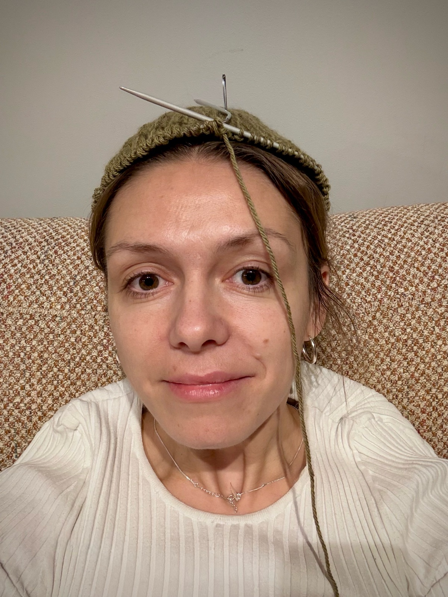

YOUR SECOND BRAIN, BUT FOR KNITTING
Mohair turns your pattern into one step at a time. It counts your rows and repeats, follows the chart and celebrates cast offs.
FROM PDF TO NEEDLES IN THREE STEPS
ADD YOUR PATTERN
Upload the PDF you bought. It joins your other patterns on one shelf.
MOHAIR SPLITS IT INTO STEPS
Each section becomes a list of steps, with the designer's wording kept and the notes attached.
TAP, KNIT, TAP AGAIN
Tap the right side for the next step. Rows and repeats count themselves.
SIMPLE ON THE NEEDLES
Everything a pattern asks you to keep in your head, kept on the screen instead.
ONE STEP AT A TIME
Big enough to read with the needles in your hands.
ROWS AND REPEATS, COUNTED
Put the sticky notes and the pencil tally away.
THE CHART, ONE SWIPE AWAY
Swipe up from any step. Your current row is already marked.
NOTES WHERE YOU NEED THEM
The designer's tips sit on the step they belong to.
EVERY PROJECT ON ONE SHELF
On the needles and finished, with progress and dates.
CENTIMETRES OR INCHES
Needles, gauge and measurements in the units you knit in.
MEET THE GOAT. SHE'S COUNTING.
Mohair comes from the angora goat, so one lives in the app. She keeps your place, cheers when you bind off, and she has noticed you skipped the gauge swatch.
CAST ON WITH HERHI, I'M THE KNITTER WHO MADE THIS
I kept losing my place in a brioche yoke, with the PDF on one screen, a row counter app on another and a pencil tally on the printout. Mohair puts all three in one place. I hope it saves you a few rows of tinking back.

QUESTIONS KNITTERS ASK US
Which patterns work with Mohair?
Any PDF pattern you own. Upload it from Files, Mail or your browser and it becomes a project with steps.
Does it read charts?
Yes. Charts open from any step with a swipe up, and the row you are on is highlighted.
Will it change the designer’s wording?
No. The step text is the pattern’s own wording. Mohair only splits it up and attaches the notes.
Centimetres or inches?
Both. Switch units in your profile and needles, gauge and measurements follow.
Can I work on more than one project?
As many as you like. Each one keeps its own place, counters and progress.
What happens to my data?
Your patterns and projects stay yours. Our privacy policy explains what we store, why, and how to delete it.
Who is the goat?
An angora, the goat mohair comes from. She counts rows, celebrates finished knits and never loses a stitch marker.
CAST ON SOON
Mohair is getting ready for the App Store. Write to us and we will tell you the day it is out.
TELL ME AT LAUNCH